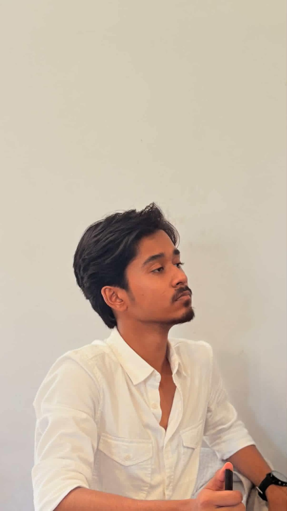
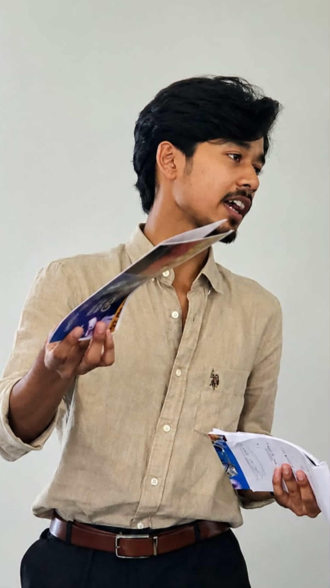

Break down the problem
Understand the context, identify root causes, and organise the challenge before jumping to solutions.
An IIT (ISM) Dhanbad student interested in breaking down complex business challenges, collaborating with teams, and learning through real-world case work.

I enjoy working with people to understand a problem, find its root causes, and develop practical ways forward. Case competitions and campus initiatives have given me opportunities to test ideas under time pressure and learn from different perspectives.
Understand the context, identify root causes, and organise the challenge before jumping to solutions.
Share perspectives, work through ambiguity, and turn discussion into a clear, practical direction.
Explore business challenges through case competitions, campus events, and entrepreneurial communities.
Use each experience to reflect, improve the process, and approach the next challenge with greater clarity.

Building a foundation through learning, campus involvement, and applied problem-solving.
Student · Programme/department details can be added when confirmed.
Selected case-based and entrepreneurial experiences shared on LinkedIn. These are presented as experiences, not as employment roles.
Led Team 3AM, representing IIT (ISM) Dhanbad. Worked through a real-world business challenge under tight deadlines, focusing on structured problem-solving, root-cause diagnosis, and practical strategy.
Represented IIT (ISM) Dhanbad as part of Team 3AM in a consulting-focused case challenge, developing problem-solving and root-cause analysis under time pressure.
Collaborated on a challenge exploring how blood and plasma collection, logistics, and cold-chain infrastructure could be made financially sustainable without commercialising blood itself. The experience involved intense teamwork and practical problem-solving.
Participated in a campus initiative connecting aspiring founders and helping them exchange ideas, discuss early-stage challenges, and learn from one another.
Certificate of participation in the quiz round, issued October 2026.
Note: Confirm the exact event names, dates, outcomes, and any public case-study links before publishing. Add more projects or certificates as Eshan provides them.
Open to connecting with people who enjoy learning, collaboration, business challenges, and building ideas into action.
Get in touch ↗